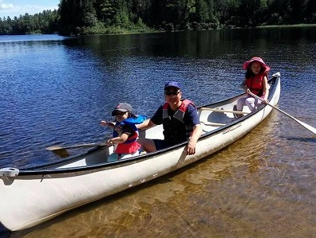

Geography:
Lianyungang
is located in the northeast corner of
Jiangsu Province
of
China.
It is located between between 118°24' and 119°48' east longitude and 34°11' and 35°07' north latitude,
covers an area of 7,777 km2 (3,003 mi2). It was home to 4,393,914 residents in 2010.
Lianyungang was known to the West as Haichow (Wade-Giles romaniztion), which initiated the international trade since 1905.
......Image - Map of Lianyungang......
Tourism:
One famous tourist attrcation in Lianyungang is:
Lian Island Resort
. Lian Island is a beautiful island connected to mainland by a 6.7 km sea dam, which is the longest sea dam in China.
As following is the picture of the Lian Island Sea Dam.
......Image - Liandao Sea Dam......
Another famous tourist attraction in Lianyungang is:
Mount Huaguo
. In the legend novel Journey to the West, Mount Huaguo was the home of Monkey King. The popularity of the novel also made the
Mount Huaguo very famous. In the mount Huaguo, San-Yuan-Palace is an ancient temple initially built during Tang Dynasty, which
contains three statues: the God of Heaven, the God of Earth, and the God of Water.
......Image - San-Yuan Palace......
Like many people, my ambitions are to realize all my own dreams.
Luckily, I made a lot of realistic dreams, therefore my dreams
realization are much like tasks planning and completion other than pure daydreaming.
This makes it possible for me to realize my dreams one by one.
My dreams that have been realized include: immigrating to a country of my own choice,
marrying a woman I love, having lovely kids, buying a house with a swimming pool,
entering a career generally in Electronics & Computer Science.
My present ambition is to switch my career to my favorite choice: software development.
And furthermore, my ambition is to succeed in this dream career, and make wealth
out of my skills, most likely through starting my own business at some future time point.
Probablly, I will be able to make the business bigger, and pass down to my kids...
Dream is not something that can be stopped, working hard to make them come true ...
I mainly talk about my career interest hereby. I am interested in chanllege and self improvement,
especially in the domain that can fully utlize my knowledge, experience and potential.
Being specific, programming is my biggest career interest from many years ago.
Limited by my home country's rigid education system,
I was not able to get into Programming career through education. Pursuing this career took me a
long detour, through immigrating to Canada and all what I suffered in this long detour.
After so many years slowing moving my career closer and closer to programming
(from Mechanical Engineering, to Telecom, to Automation, to Network, and eventually to IPD), when
the real jumpping-over chance came, I had no hesitation at all. Go for it, IPD and my programming career.
For pleasure, my hobbies are boating and fishing. More fun is to do these with my family. Check the following photos.

......Image - Canoeing in Parc National de la Maurice......
......Image - Fishing......
I have an awesome wife, and 3 lovely daughters. Check the following photos.

......Image - Family with a lot of love......
Back To Top